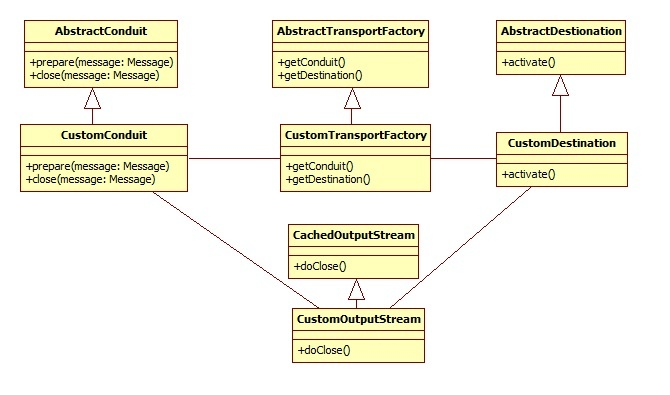
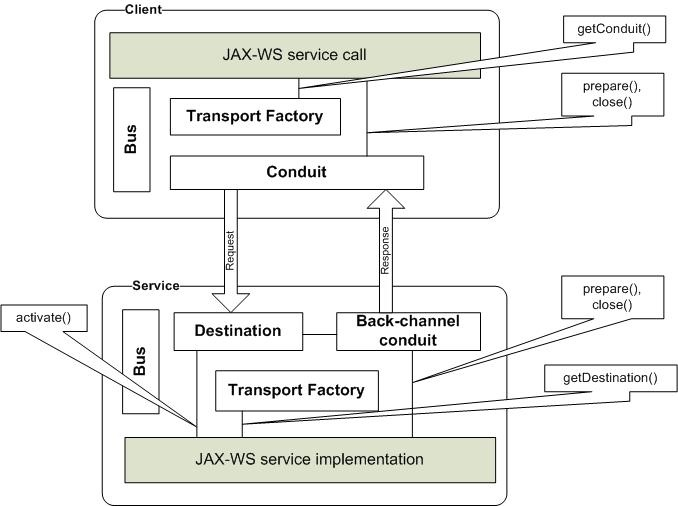

This page summarizes an experience of implementing a new CXF transport.
Use Cases
Normally implementing a custom transport is required when providing a new physical protocol not yet supported by CXF (udp or ftp, for example). New CXF transports can be also a solution to support legacy ESB participants that have to be interoperable with JAX-WS services and clients. Presently the CXF 2.3.x distribution provides a transport implementation for the following protocols: HTTP(S), JBI, JMS and Local(inside one JVM). Camel additionally implements CXF transport for Camel exchanges.
Architecture and Design
The transport functionality is based on two fundamental definitions: conduit and destination. Conduits are responsible for sending a message to recipients and destinations for receiving a message from the sender. In order to send a response, a destination needs its own back-channel conduit (in case of request-response communication). Conduits and destinations are created by a TransportFactory. CXF selects the correct TransportFactory based on the transport URL. SOAP is also considered a high level transport and has its own conduit and destination in CXF.
To send a message into a physical channel, the conduit should access the message context. Normal practice in this case is to use a subclass of OutputStream extending CachedOutputStream. The custom stream will be fed the message and provides a possibility to access context in streaming or buffered form depending on the transport requirements. CachedOutputStream is configured to keep message in memory only up to a predefined size. If this size is exceeded, the message is swapped to disk.
A class diagram of TransportFactory, Conduit, Destination and OutputStream is shown below:

How it Works
Interaction between JAX-WS client and service using CXF transport is represented in the following figure:

Simplified Client Workflow:
- Step1: JAX-WS client invokes a service, in this manner for example:
URL wsdlURL = this.getClass().getResource("/HelloWorld.wsdl");
HelloWorldService service = new HelloWorldService(wsdlURL, SERVICE_NAME);
HelloWorld hw = service.getHelloWorldPort();
String result = hw.sayHi(TEST_REQUEST); }}
- Step2: CXF runtime selects the correct TransportFactory based on some criteria (described below)
- Step3: CXF runtime calls TransportFactory.getConduit() method to obtain the conduit
- Step4: CXF runtime invokes Conduit.prepare() and passes outgoing message as argument
- Step5: Conduit sets own OutputStream (normally extended CachedOutputStream) as outgoing message content
- Step6: CXF runtime processes outgoing message, calls the interceptor chain and invokes Conduit.close(Message) method for the outgoing message.
- Step7: Finally, OutputStream.doClose() for the outgoing message is invoked
- Step8: In the doClose() method, the OutputStream class has access to the marshalled outgoing message and exchange and will send this message to the service using the corresponding transport protocol
- Step9: In case of one-way communication exchange will be closed. Skip to Step 14
- Step10: In case of request-response communication, the conduit will wait for the service response in synchronous or asynchronous manner
- Step11: When response is received, the conduit creates a new message, sets its context and puts it as In-Message in the exchange as an incoming message
- Step12: When fault is received, Conduit creates a new Message, sets its context and puts it as fault message in exchange as in-fault message
- Step13: Conduit notifies incomingObserver (that is ClientImpl object) about the response using incomingObserver.onMessage() call
- Step14: Conduit.close(Message) method is invoked for incoming message. Normally the conduit implementation decreases the reference count with the service, potentially closing the network connection if the count is zero.
- Step15: JAX-WS client code receives the response in sync or async style
Simplified Service Workflow:
- Step1: JAX-WS service is registered for example in this way:
HelloWorldImpl serverImpl = new HelloWorldImpl();
Endpoint.publish("udp://localhost:9000/hello", serverImpl);
- Step2: CXF runtime selects correct TransportFactory based on some criteria (described below)
- Step3: CXF runtime calls TransportFactory.getDestination() method to obtain the destination
- Step4: As soon as CXF runtime activates endpoint (adds listener, etc) Destination.activate() method is automatically invoked
- Step5: Implementation of Destination.activate() normally opens network transport connections and listens to incoming requests
- Step6: When a request comes, the destination creates a message, sets the content and notifies message observer (that is ChainInitializationObserver object) via incomingObserver.onMessage() about request. Normally an incoming connection is saved in a correlation map to be extracted for the appropriate response.
- Step7: The business service implementation will be called with the request message. In case of one-way communication the exchange is now finished. In case of request-response, the business implementation either returns a response or throws a fault exception.
- Step8: The CXF Runtime requests a back-channel conduit from the destination via Destination.getInbuiltBackChannel()
- Step9: The Back-channel conduit's prepare() method will be called with a response message as argument
- Step10: Back-channel conduit sets its own OutputStream as a message context
- Step11: CXF runtime processes the response message, calls the interceptor chain and invokes Conduit.close(Message) for the response message.
- Step12. Finally OutputStream.doClose() method for the response message is invoked
- Step13: In doClose() method the OutputStream class has access to the marshalled response message and will send this message through the network as a response to the client. Appropriate incoming connection normally is extracted from correlation map.
Registration of Transport Factory
There are two ways to register transport factory: programmatically or via Spring configuration.
To register transport factory programmatically it is necessary to execute the following code:
Bus bus = BusFactory.getThreadDefaultBus();
DestinationFactoryManagerImpl dfm = bus.getExtension(DestinationFactoryManagerImpl.class);
CustomTransportFactory customTransport = new CustomTransportFactory();
dfm.registerDestinationFactory("http://cxf.apache.org/transports/TRANSPORT_PREFIX", customTransport);
dfm.registerDestinationFactory("http://cxf.apache.org/transports/TRANSPORT_PREFIX/configuration", customTransport);
ConduitInitiatorManager extension = bus.getExtension(ConduitInitiatorManager.class);
extension.registerConduitInitiator("http://cxf.apache.org/transports/TRANSPORT_PREFIX", customTransport);
extension.registerConduitInitiator("http://cxf.apache.org/transports/TRANSPORT_PREFIX/configuration", customTransport);
Where TRANSPORT_PREFIX is the protocol of the new transport (http, https, jms, udp).
For Spring configuration, the following could be used instead:
<bean class="org.company.cxf.transport.CustomTransportFactory"
lazy-init="false">
<property name="transportIds">
<list>
<value>http http://cxf.apache.org/transports/TRANSPORT_PREFIX</value>
<value>http://cxf.apache.org/transports/TRANSPORT_PREFIX/configuration</value>
</list>
</property>
</bean>
To define a new transport endpoint in the WSDL document follow these two steps:
a) Set the soap:binding transport attribute to the transport URL value (http://cxf.apache.org/transports/TRANSPORT_PREFIX)
b) The Port address element should be bound to namespace equals to transport URL in WSDL XML
Sample:
<wsdl:definitions
xmlns:transport="http://cxf.apache.org/transports/TRANSPORT_PREFIX" …> …
…
<wsdl:binding name="GreeterPortBinding" type="tns: GreeterPortType">
<soap:binding style="document" transport="http://cxf.apache.org/transports/TRANSPORT_PREFIX"/>
…
<wsdl:service name="GreeterService">
<wsdl:port binding="tns:GreeterPortBinding" name="GreeterPort">
<transport:address location="LOCATION_URL">
…
Conduit and Destination Lifecycle
The conduit and destination lifecycle can be started by the TransportFactory during every client or service creation. The TransportFactory can either create a conduit and destination for each request or cache them based on service endpoint information.
Concurrency Aspects
Conduit and destination objects can by concurrently accessed by multiple threads. Implementations should care about concurrent correlations maps and/or synchronization primitives.
References
- CXF transport implementations: package org.apache.cxf.transport.*
- CXF Local Transport: http://cxf.apache.org/docs/local-transport.html